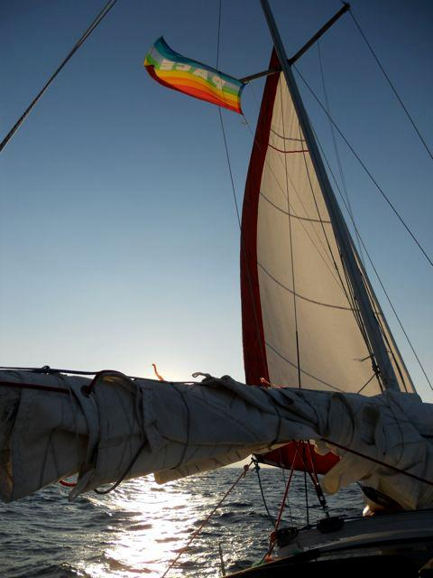
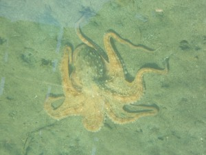
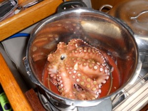

Teknede Yaşam
Uzunca bir zamandır prensesimizin baş yardakçısı Nazım kardeşimizin ısrarlarıyla teknede yaşam üzerine birşeyler karalamaya çalışıyorum. Ben diyorum ‘Prenses anlamaz bu işten. adı üzerinde prenses işte. O steril ortamlara alışkındır. Şimdi tekneydi, tamirdi, doğaydı derken karıştırmayalım kafasını. Otursun sarayında. O öyle zora falan gelemez. O en iyisi önce bi tekne alır sonra kaptanı, gemicisi, aşçısı, makyajcısı’ dediysem de anlatamadım. ‘Sen illa yaz.’ dedi. Bu topraklarda denize ait şeyler lüks olduğundan bu işin sadeliğini anlatırken hep birşeyler eksik kalıyor. Dedim ‘bende bana çok sorulan soruları sorulduğu şekliyle listeleyeyim. Unutmayın ki sayın prensesim bu yazı ‘steril’ olmayanlara yöneliktir. Eğer denizciliğin bir türü olan el sikiyle gerdeğe girmek dediğimiz tarzda bir denizcilik anlayışınız varsa lütfen zamanınızı bu yazıyla harcamayınız.
İlk olarak belirtmeliyim ki her insan gibi her tekne de ayrıdır. Birbirine benzemez. Yılı, markası, modeli aynı olsa bile amaçları ayrıdır. Kimisi dünyanın masrafını yapar ama limanda oturmayı tercih eder kimi de beş kuruşu yoktur dünyayı gezer. Durum tamamen senin hayal gücünle alakalı.
Murat arabayı ne kadar elden geçirirsen geçir muhtemelen dünyayı dolaşamazsın ama Murat kalitesindeki bir tekneyle dünyayı dolaşabilirsin. Her zaman konu döner dolaşır bütçeye gelir. Konunun para kısmı çok ciddi gözükse de bu konu bence biraz tartışmalı. Şöyle ki;
a-) yeni tekne alınabilir,
b-) ikinci el tekne alınabilir.
c-) tekne yapılabilir.
d-) proje yapıp sponsor bulunabilir
e-) ‘en iyi tekne arkadaşımın teknesi’ deyip etliye sütlüye bulaşılmaz.
Son ikisi hariç diğer seçeneklerde ucundan kıyısından para harcamak zorunda kalırsınız. Sponsor bulmak ise zordur ve amatörlükten biraz farklı bir iştir. Bu konuda hiç tecrübem yok, o yüzden bunu geçiyorum. Ayrıca para harcamak kişiden kişiye değişir. İhtiyaçlar ve varılmak istenen noktalar ise her zaman farklıdır.
Diğer konu da ilham alabileceğin denizci tipleri. Ben de bunlardan biri olabilirim ama diyeceklerim senin doğruların olmayabilir. Bu yüzden bu sınıflandırmadan kaçınıyorum. Her denizci tipinden muhakkak öğrenecek şeyler vardır. Tipleri sınıflayıp ‘ben marina denizcisiyim, o uzakyol denizcisi’ demek yerine hepsinden birşeyler öğrenip kendi tarzını yaratmak bana en doğrusu geliyor. Bu arada bir de kaptanı, gemicisi olan tekne sahipleri var ki ben onlara denizci diyemiyorum. Birisinin denizciliğini sınıflandırmak, puan vermek haddim olmasa da parçası olmadığım bir ortam olduğundan onları bu yazıya dahil etmiyorum. Bu kalın abiler, ablalar denizi seviyor olabilirler ama sevmek başka, sevdiğini birinci elden okşamak başka. Sen sevdiğini okşamak için adam tutuyorsan lütfen ‘ben denizciyim’ deme. ‘Denizi seviyorum’ de.
Ve uzun bir girişten sonra işte sıkça sorulan sorulara pek sıklıkla verdiğim cevaplarım…
TEKNE KÜÇÜK DEĞİL Mİ?
Evet küçük. Bir evle karşılaştırıldığında (genelde evle karşılaştırılıyor) tabii ki küçük ama büyük olanları da var. Önemli olan işlevi demişler. Her sabah uyandığımda o daracık mekandan kafamı çıkarttığımda hissettiğim ruh hali hiç bir yere sığmaz. Yanımda balıklar atlıyor. Kuşlar tepemden geçiyor. Yağmur varsa ıslanıyorum. Güneş varsa terliyorum. Biraz çadır gibi oluyor ama önemli olan bundan daha geniş bir ev olabilir mi? Abartısı bir yana teknede büyüklük biraz bütçe biraz da deniz üzerinde yapmak istediğinize bağlı. Büyüklüğü ne olursa olsun her zaman sınırlı miktarda elektrik ve suyunuz olur. Denizde olmanın/yaşamanın keyfini almış biri için ‘küçük’ olması bir sorun olmaz. Gerçi denizde yaşayanlar hep ‘tekne her zaman iki metre ufaktır’ derler ama bunu telafi eden başka şeyler vardır ki bunu anlamak için yukarıda verdiğim ipucundan yola çıkarak denizde zaman geçirmeniz gerekir. Şimdi de ben soruyorum: ‘Küçük olması neden olumsuz olsun ki?’
TEKNEDE YAŞAMAK ZOR OLMUYOR MU?
‘Tamam artık itiraf ediyorum. Çok zor oluyor. Acılar içinde kıvranıyorum. Her gün nerden bulaştım bu illete diye düşünmeden edemiyorum. Daracık mutfak, sürekli su, elektrik hesabı yapmak, masraflar, fırıtna çıkar tekneyi düşünürsün, bir yere gittiğinde rahat rahat bırakamazsın. Offf yaa. Bu kadar zorluğa neden katlanıyorum. İyi ki sordunuz teşekkür ederim.’ diye cevaplamak istiyorum ama bunu soran tanımadığım birisi ise politik cevaplar verip durumu kurtarmaya çalışıyorum. Bana gelene kadar teknesinde yaşayan, dünyayı dolaşan, çocuk doğuran büyüten belki binlerce insan var. Neden ve nasıl zor olsun ki? Gerçekte zor olan bu soruyu cevaplamak. ‘Zoru severim’ gibi bir cevapta verilebilir ama bunun yerine ‘zorluk nedir?’ diye sorasım geliyor. Tabii ki bazı zorlukları var ama bir apartman dairesinde, şehirde yaşamanın zorluğu yok mu? Ya da bir köyde, çiftlikte… Hele hele köyde hayvanları, toprağı olan birisiyseniz… İşte gerçek zorluk orada. Ben tekne öncesi yaşadığım dönemlerle karşılaştırdığım zaman uyandığımda hep sokaktaki aynı lambayı, evi görmek ruhumu öldürürken şimdi burada sadece suyu, elektriği idareli kullanmak karşılığında birçok şeyi dibine kadar yaşamanın keyfini yaşıyorum.
Rüzgar türbini. Sıkıysa tamir etme. Yarım saatlik iş için dünyanın parasını istiyorlar. Ayrıca elektriksiz kalması da cabası
MASRAFI ÇOK DEĞİL Mİ?
Amatör amaçla sahip olunan tekneyi aynı zamanda bir yatırım aracı olarak görüp, ‘iyi bakıp ileride satarım’ diye düşünürseniz bence havayı alırsınız. Böyle bir amacınız varsa belki de emlak işine girmelisiniz. Bir tekne her zaman değerinden kaybeder. Elektronik eşyalar gibi her yıl yeni modeli çıktığından değil, onu yüzdürebilmek için devamlı emek harcamak zorundasınızdır. Evinizde, arazinizde birşeyleri belki erteleyebilirsiniz ama teknede kırılan, bozulan bir parçayı değiştirmek gerektiğinde bunu hemen yapmalısınız. Teknede erteleyebileceğiniz şeyler çok sınırlıdır. Yoksa tekne en basit tabiriyle ya batar ya da sizi sakatlar. Bununla beraber önünüze cebinizi boşaltmak isteyen bir sürü malzeme satıcısı ve usta çıkar. Siz onların arasından çeşitli manevralarla dolaşmaya çalışırken benim gibi bir arkadaşınız kalkıp ‘abii bak onu şöyle şöyle yaparsan yarı fiyatına gelir’ der ve yapılacak iş size daha pahalıya gelir. İşi ucuza getirmenin sırrı ise biraz daha iyi bilen birisinin de dikkat etmediği bazı detaylarda oluyor. Aynı yemek tarifi gibi. Birisi size tarifi verir ama hep söylenmeyen birşey vardır ve o lezzet yakalanamaz. Akıl veren kişi de iyi niyetlidir ama ‘o’ detayı size söylemek aklına gelmez. En iyisi herkesi dinleyip kendi doğrunuzu yapmaktır.
Herneyse uzun lafın kısası tekneyi alırken ödediğiniz para bir yana, teknenin işlerini kendiniz yaparsanız teknede yaşamak karada yaşamaktan kesinlikle daha ucuza gelir. Nasıl mı? O da başka bir yazının konusu olsun.
KURU KURU YEMEKTEN SIKILMIŞSINDIR, GEL BAK TAZE FASÜLYE YAPTIM
Bu tam olarak bir soru değil ama çok karşılaştığım bir durum. Bir arkadaşımın evine gittiğimde genelde karşılaştığım sorular bu tarzda oluyor. Ya da ‘hep makarna mı yiyorsunuz?’ diye soruluyor. Açıkca söylüyorum başka da demiyorum. Tekne esasında ev gibidir, Her türlü tencere, tava, ocak, fırın, fasülye soyucu, kevgir ve her türlü temel mutfak malzemesi vardır. Hatta bende mutfak robotu bile var. Herşeyi pişirebilir yiyebilirsiniz. İnanmayacaksınız ama rakı bardağı bile var. Güzel bi günün sonunda rakımı plastik bardakta değil, bildiğiniz cam rakı bardağında, suyumu da su bardağında içiyorum. Tabii ki seyir halindeysek hava şartlarına göre kuru yemekler yediğimiz oluyor. Ya da uzun seyirlerde taze yemekler bittiğinde. Ama bu genel durumu anlatmıyor.
|  |  |
| Önce | Sonra |
SIKILMIYOR MUSUN?
‘Evet sıkılıyorum. Sıkıntıdan geberiyorum n’olur kurtarın beni bu hayattan’ diyesim geliyor. Neden sıkılacağımı anlayamadığımdan bu soruya cevap veremiyorum. Tam tersine değil sıkılmak ‘hassiktir bi gün daha bitti’ deyip hayıflanıyorum.
TELEVİZYONSUZ SIKILMIYOR MUSUN?
İşte bu soruların kralı olmaya aday. Bir önceki sorunun ardından bu geliyor.
1- Televizyonum olmadığını nerden biliyorsun?
2- Televizyon ne zamandan beri sıkıntı geçiren bir araç oldu?
3- Televizyonu sevdiğimi de nereden çıkardın?
Bu soruların cevabını almadan bu soruyu cevaplamıyorum. Sizin cevaplarınızı duyar gibiyim işte cevabım; ‘İstediğim filmleri seyretmek dışında televizyondan nefret ediyorum. .’
Burada esas durum şu benim TVmin olup olmamasından çok ‘ben TVsiz’ yapamam’ diyenlerin ellerinden oyuncakları alınmış ve kendilerini teknede boşlukta hissedecek olmaları. TV seyretmek yerine iki tane kullanma kılavuzu okuyup, yan teknedeki dostunuzla birşeyin tamiri üzerine konuştuğunuzda ‘tekne masraflı mı?’ sorusunun cevabı da gelmiş oluyor. Bırakın TVyi teknenin güzelliklerinden faydalanmak için ustalara teslim olmak yerine kendi işinizi kendiniz halledin. Bu yazıdan sonra başkalarının yazılarını okuyup tekne yaşamı hakkında bilgi toplamaya çalışın. Sonuçta size de tavsiyem televizyonunuzdan vazgeçerseniz onu satmayın. Aşağıyı kontrol edip kendisini hemen camdan aşağıya atın.
BAK GEL BURADA RAHAT RAHAT YAT. TEMİZ TEMİZ YATABİLİRSİN.
Tamamen iyi niyetli olarak gittiğim yerlerde böyle bir yaklaşımla beni evlerinde en iyi şekilde ağırlamaya çalışıyorlar. Kendilerine çok teşekkür ederim ama uykuya dalarken beton duvarlara bakmak, uyandığımda heryerin kapalı olması ve odadan çıktığımda başka duvarları görmek daha çok kasılmama neden oluyor. Ben ortalama sünger yatağımla çok mutluyum. Ayrıca bende teknemde temiz temiz yatıyorum.
ÇAMAŞIRLARI N’APIYORSUN?
Yıkıyorum. Bazen elde bazen çamaşırhanede. Ama birazcık daha büyük bir tekne sahibi olursam, hatta mevcut yaşadığım teknede de ufak bir makine yeri ayarlayacağım. Yıllardır çamaşır taşımaktan yoruldum. Pek olağan olmasa da bazı dostlarımın teknesinde var. Elektrik ve suyu teknik olarak ayaryabilirseniz ufak bir makina koymak gayet olası.
YA ELEKTRİK?
Güneş paneli ve rüzgar türbini. Son 5 yıldır elektrik faturası ödemiyorum diyebilirim (sadece yılda bir iki ay ısınmaya destek olmak için). Yaşadığım yerin ikliminin avantajlarını da kullanarak çok fazla ısınmaya ihtiyaç duymadığımdan güneş enerjisi, günlük ihtiyaçlarım olan buzdolabı, aydınlatma, su pompalarına fazlasıyla yetiyor.
PEKİ ISINMA?
Geçen yıl karavanlarda kullanılan dizel ile çalışan bir ısıtıcı taktım. Gerçekten çok ama çok az yakıt harcayarak içerisi hamam gibi oluyor. Ondan önce saç kurutma makinasının biraz büyüğü fanlı bir ısıtıcı yeterli geliyordu. Eğer teknede yaşamak gibi bir niyetiniz varsa teknenin yalıtımına dikkat etmekte fayda var. Dar alanda çok fazla nem birikiyor ve kış şartlarında iyi havalanmadığı için nemi dışarı atmak çok zor oluyor. Evlerde de olduğu gibi iyi yalıtılmış bir tekne az yakıtla verimli bir ısınma sağlayabiliyor. Özellikle kuzey teknelerinde sıkça görülen odun sobası, çeşitli tip dizel ısıtıcılar çok yaygın. Teknenin tasarımına uygun olarak araştırmak lazım. Bence ısınmak büyük bir sorun değil ama yaşıyorsanız kış ortamında çok gerekli.
SU?
Rahat davrandığımızda 2 kişi günde 25 litre kadar. Karaya botla gidip geliyoruz ve hergün bir damacana su taşımak yetiyor. Ama su olmayan yerlerde idareli kullandığımızda 200 litre suyu 20 günden fazla kullanabiliyoruz. Bu kadar suyla bir ay okyanus geçenler var. Bir günde harcayan da. Tamamen sizin tasarrufunuzda. Seyir yaparken gideceğiniz yerlerde su yoksa o zaman idareli kullanmak durumundasınız. Nasıl mı? Sadece bi kereliğine birkaç saat (gün bile değil) denizde susuz kalın öyle bir öğreniyorsunuz ki idareli kullanmayı. İnsanın birşeyi bu kadar hızlı nasıl öğrendiğinize aklınız şaşar.
NASIL BİR TEKNE TAVSİYE EDERSİN?
Bu soru güzel bi soru ama önceden cevaplanması gereken bir kaç soru var. Amacın nedir? Tecrüben var mı? Bütçen nedir? Hemen tekne almadan önce biraz dostlarının teknesinde takılıp, bi kursa gitsen nasıl olur? gibi… Tasarım konusuna hiç girmiyorum biraz beni aşıyor ama gövdesi fiber, ahşap, saç, alüminyum, beton olan teknelerin hepsinin avantajları dezavantajları var. Kim ne derse desin doğru olana sen karar vereceksin.
Bana en çok sorulan sorular böyle. Cevaplar ise tabii ki bana göre böyle. Eğer parasını verip bir marina da kalıyorsanız tekneniz kıyıdan elektrik alıp, suyunuzu da limandaki çeşmeden sağlıyorsanız ne güneş paneline ihtiyacınız olur ne de suyu idareli kullanmaya. Bunların hepsi birer seçenektir ve önemli olan deniz üzerinde olmaktan keyif almaktır.


{kind=link}
{kind=link}
{kind=link}
{kind=link}
{kind=link}
Harika anlatım.
Denizcim, ellerine sağlık…
Osman
Süpersiniz. Bu kadar güzel ve açık anlatım için teşekkürler.
Vay canınaaaa….analar neler doğuruyor:))))
Süper bir anlatım özellikle Denizci ve Denizi seviyorum tabirlerinin izahındaki benzetmeye bayıldım
Senelerdir ( sekiz senedir teknemde yaşıyorum ) anlatmak istediklerimi tek sayfada anlatmışsınız. Çok teşekkür ederim. Karada yaşamaya çalışanlara her zaman sempati duydum. Sağolun.
Emekli olduktan beri tekneyi mekan edinmiş biri olarak teknede yaşam konusu bundan güzel anlatılamazdı diyorum. Eline sağlık Deniz kardeş.
heveslendim simdi:)
hayalim somutlaştı bu yazıyla..
merhaba tekne ve denize olan merakımı bastırmak için araştırma yaparken bu yazınıza rastladım olayı gayet güzel anlatmışsınız denize uzak olmamdan dolayı tecrübem olmasada farklı alanlardaki tecrübelerime dayanarak öncelikle cesaret ve karar vermek daha sonrasında olayların kendi kendine gelişeceğini ummak bence istediğin gibi yaşamak önemli olan mecbur olduğun için değil şimdilik araştırma ve öğrenmeye devam ilerde deniz yaşamına adım atabilirim inşallah sağlıcakla kalın deniz ve mavisiz kalmayın:))
Üstad;tebrik ve takdir duygularımı kabul edin.
Ben özetle
1)lise4.sınıfta 9 dersten kaldığımda çocukluk-gençlik hayalim kaptanlıktan vazgeçtim.
2) aşık oldum genç yaşta evlendim gönül bu nereye konacağı belli olmaz deniz sevmeyen bir eşim oldu.
3)Çok çocuk sevdik çok çocuğumuz oldu onların tahsillerinden artan para ile kayık dahi alamadım.
4)şimdi iş işten geçti 67 yaşında bir emekliyim.Bir kayığım var 4 metrelik.yol yaparken kendimi büyük teknede hayal ediyorum.
..ve balıktan geldiğimde elbiselerimi sokak kapısında değişiriyor,balık takımlarını merdiven altına gizliyorum
kokuyormuş.ondan.
be nedenle ağzım açık okudum yazılarınızı hayranlık ile.sevgi ile ışıkta olun hep
Mükemmel bir yazı olmuş.Coşan duygularımı bir nebze dizginleyebilmek için gezinirken buldum yazınızı ve soluksuz okudum.Çok teşekkürler bu güzel anlatım için…Yüreğinin olmak istediği yerde olmak en güzel armağandır insana! Mutlu günler diliyorum herkese…
Evirip çevirip ‘ Teknede yaşam ‘ yazıyorum arama motoruna okuyorumda okuyorum,teoride bayağı bişeyler öğrendim.Hatta branşımı sorsalar yelkenli katamaranlar bile diye bilirim,markaları, teknik bilgileri vs .Sonra kalbime bir sızı, birşeyler oluyor bunlar hep para……Olsun ‘Teknede yaşam’ yazıyorum arama motoruna okuyorumda okuyorum…..Beyninize ve kaleminize sağlık.
TEBRİK EDERİM. BU KADAR HARİKA BİR ANLATIM. (BEN BİLE ANLATAMAZDIM !!!…) RÜZGARIN KOLAYINA OLSUN HOCAM..
ne tesaduf.1 hafta sonra botta yasamaya basliyorum.denizin ustunde uyumak ve yaninda uyanmak guzel bir duygu olsa gerek.arti istedigin zaman guneslenmek.sahilde yurumek istersen inip hemen yuruyosun,ne zoru ya esas apartmanda hayat zor.
Tebrikler kısa,net ve kararlı anlatım.Eğitimimizin boşa gitmemesi ve hayat şartları gereği 10 yıldır lanet olasıca istanbulda yaşıyorum.Çanakkaleli biri olarak 10 yıldır bir gün bile alıştınmı deseniz 1 gün bile alışamadım bu şehre, hep bir gitme hep bir teknede yaşam hayali…Otuzlu yaşlarımın başındayım.Umarım daha fazla sürmeden yada ömür bitmeden bu hayal gerçek olur…Tüm Denizcilere selam..
Tek kelimeyle Süper !! 🙂
Ağzınıza parmaklarınıza sağlık bu kadar güzel anlatılabilir en kısa zamanda bende denizde yaşamak bol bol gezmek görmek istiyorum umarım görüşüp tanışma imkanımız olur.
kaleminize sağlık. bu yazınızın hemen ardından “mahsur kalmak” ve “tekne nedir? ne değildir? 1” başlıklı yazılarınızı da okudum. sağolun.
Merhaba Deniz Hocam.Nerelerdesiniz? Orhaniye den selamlar,sevgiler.
Sadece bir ekleme… Murat kalitesindeki bir araba ile de pekala dünya gezilebilir; hatta, genelde bu tip yolculuklara girişenler, tam da Hacı Murat, Anadolu, dededen kalma Reno Steyşın gibi makinalar kullanıyorlar. 🙂
Sevgiler,
Kerem